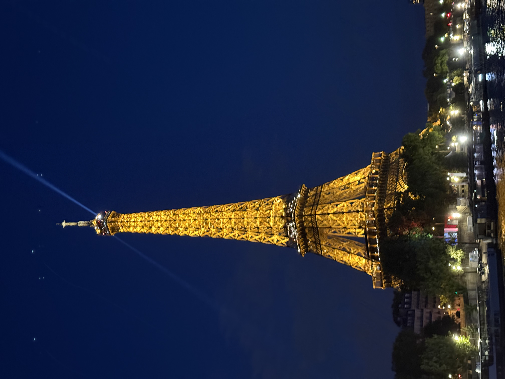
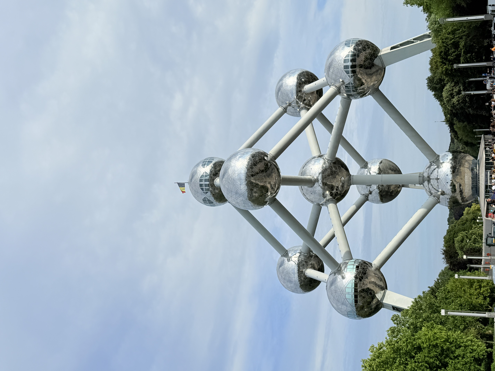

My Summer Trip
Last summer I travelled through Paris and Brussels. From the Eiffel Tower to Belgian waffles, this trip was full of unforgettable moments. This page is a small travel journal of my favourite memories.
View the Photo Gallery →
Paris, France
Paris greeted me with wide boulevards, historic architecture, and the unmistakable silhouette of the Eiffel Tower. Walking along the Seine and exploring charming neighbourhoods made every day feel like a postcard.

Brussels, Belgium
Brussels surprised me with its mix of historic charm and modern flair. The Grand Place, the Atomium, and the smell of fresh waffles on every corner made the city feel warm and welcoming.
